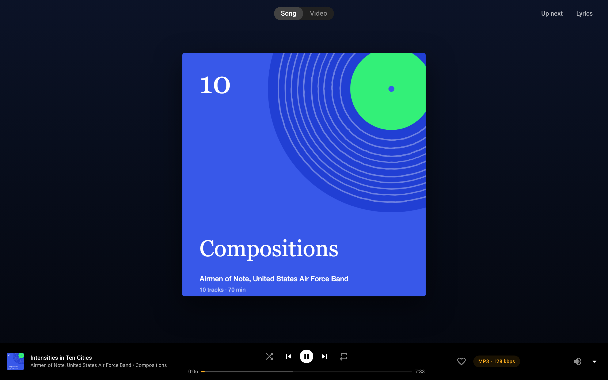

accent-color
Recolours the browser's own volume slider to the player's white.

How Riff uses it
On a wide screen the volume control is a native range input that fades in beside the mute icon on hover or keyboard focus. accent-color recolours the browser's slider to the player's foreground, so it is the stock control, not a custom-drawn track.
Why
A default blue slider would be the only off-palette element in a player that is always dark, and restyling a range input across browsers takes a lot of vendor CSS.
Without it
The browser's default accent shows.
Where
- plugins/riff/assets/riff.css, line 945
accent-color: var(--riff-fg);
Links open the source at the commit this page was published from.
Specification: CSS Basic User Interface Module Level 4. Reference: accent-color on MDN.